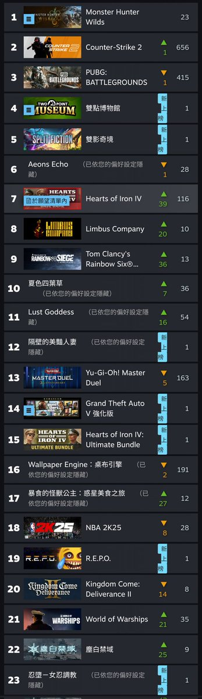

Rain_Raven🏳️🌈
@Raincandy_1937
@NeaOkawa @jakobsonradical 首先，虹彩六號這遊戲最近史低潮而且是網遊，跟黑猴沒什麼可比性
不過我確實同意黑猴是空殼子營銷神游，同為ARPG遊戲它明顯是奔著黑暗靈魂系列和仁王2去的，可惜可玩性就那樣，我記得我玩了一個月就全成就了

Nea
@NeaOkawa
@jakobsonradical GTA5，彩虹6都發售快10年了還天天有人在玩，黑猴呢？ https://t.co/DkS5UyMbns